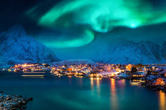

Olá, me chamo Gabriel, tenho 24 anos, moro em Almirante Tamandaré, cidade vizinha a Curitiba/PR. Sou formado em psicologia desde 2023. Sempre gostei muito de computadores e jogos, e nas possibilidades e oportunidades que a área de tecnología pode oferecer, diante disso penso em transitar de carreira!!
Seguem algumas pequenas atividades/hobbies meus:
Falando em gostos, a seguir apresento alguns locais que tenho o sonho de sonho de conhecer!!
| Nome | Imagem |
|---|---|
| Noruega |  |
| Grécia | |
| Egito |